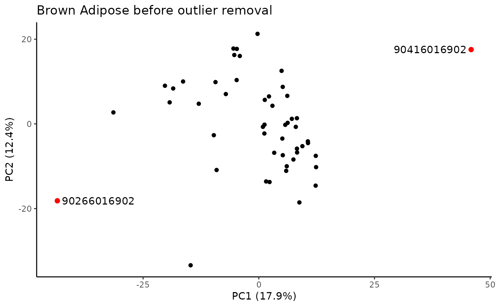
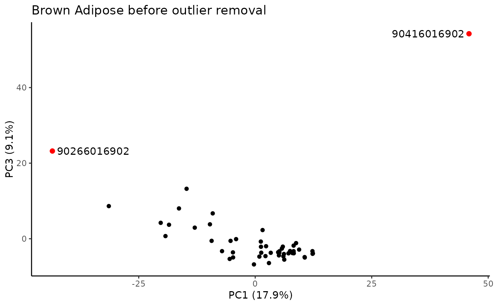
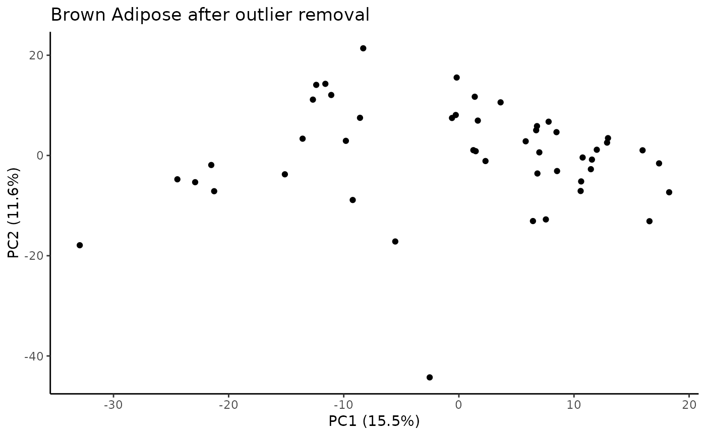
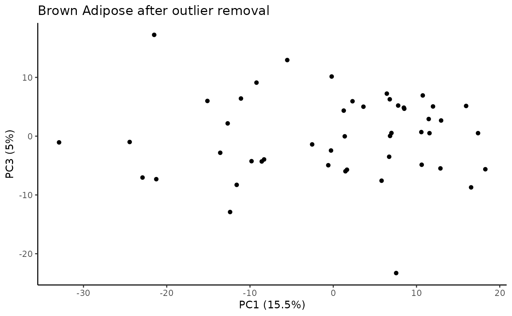

Identify samples that fall outside of the specified range for principal components that explain some minimum variance.
Usage
call_pca_outliers(
norm,
min_pc_ve,
scale = TRUE,
plot = TRUE,
verbose = TRUE,
iqr_coef = 3,
M = Inf,
title = NULL
)Arguments
- norm
feature by sample data frame of normalized data
- min_pc_ve
numeric, minimum percent variance explained by a PC to check it for outliers
- scale
bool, whether to scale input data before PCA.
TRUEby default.- plot
bool, whether to print PC plots before and after removing outliers.
TRUEby default.- verbose
bool, whether to print descriptive strings.
TRUEby default.- iqr_coef
numeric, flag PC outliers if they are outside of IQR *
iqr_coef- M
integer, select M most variable features
- title
character, substring to include in PC plot titles
Value
named list of four items:
pca_outlierscharacter vector of viallabels identified as outliers
prcomp_objresult returned by
prcomp()from PCA of normalized data without outliers removednum_pcsinteger, number of PCs checked for outliers
pc_outliers_reportmatrix of results with one row per outlier
Examples
bat_rna_data = transcript_prep_data("BAT", covariates = NULL, outliers = NULL)
#> TRNSCRPT_BAT_RAW_COUNTS
#> TRNSCRPT_BAT_NORM_DATA
bat_rna_outliers = call_pca_outliers(bat_rna_data$norm_data,
min_pc_ve=0.05,
iqr_coef=5,
M=1000,
title="Brown Adipose")
#> PC1 PC2 PC3 PC4 PC5 PC6 PC7 PC8 PC9 PC10
#> 0.17851 0.12381 0.09078 0.04275 0.02831 0.02600 0.02306 0.02091 0.02076 0.01946
#> The first 3 PCs were selected to identify outliers.
#> PC outliers:
#> PC viallabel PC value
#> [1,] "PC3" "90266016902" "23.213"
#> [2,] "PC3" "90416016902" "54.24"
#> Plotting PCs with outliers flagged...


#> Plotting PCs with outliers removed...

